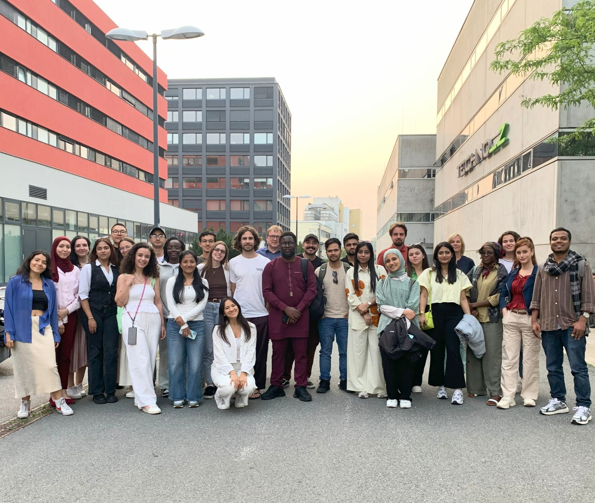
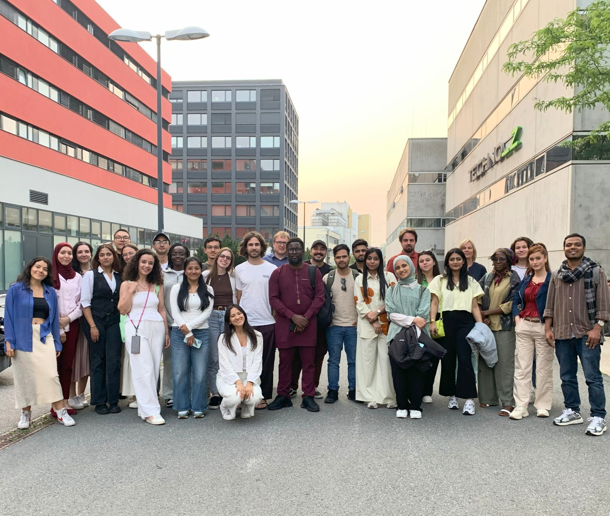

As part of our academic program on Copernicus Hubs and Institutions, we had the opportunity to spend a full day in Vienna, visiting two important institutions that are at the forefront of Earth observation, data infrastructure, and environmental monitoring in Europe. One of the highlights of the day was our visit to the Earth Observation Data Center (EODC), located at 3rd quarter (Landstraße) of Vienna. This experience gave us not only technical insights but also a broader view of how large-scale data infrastructures support environmental science. After arriving at EODC, we were greeted by Christian Briese, the institution's CEO, who gave us a presentation about the work and processes going on there. He emphasized the central mission of EODC: to ensure reliable access to massive volumes of geospatial data used in Earth observation. It quickly became clear that the EODC is a key player in European data ecosystems, especially when it comes to supporting the Copernicus Earth Observation Program. One of the most fascinating parts of the day for me was the guided tour through their high-performance computing facilities. We had the chance to see the Vienna Scientific Cluster 4 (VSC-4) and its successor, the VSC-5—Austria's most powerful supercomputers. It was impressive to learn that these machines are capable of processing enormous quantities of satellite data, including imagery used in climate research, land monitoring, and even natural disaster prediction. These clusters are composed of state-of-the-art CPUs and GPUs and form the backbone of many European environmental monitoring services. (This was not the first time I had seen a supercomputer-server giant, in 2023, during the summer school organized by the Ljubljana-based company Singergise, they showed us the server cabinet from which the EO Browser operates.)
Another memorable aspect of the visit was the data storage infrastructure. As a student interested in geoinformatics, this part made a deep impression on me - it showed how vast and complex the data systems really are. It also raised many philosophical questions for me, and it was very thought-provoking to see and hear these machines in action. We also participated in a presentation that introduced the Copernicus services EODC supports. Mr. Briese explained their role in the Copernicus Global Land Service, the Climate Change Service (C3S), and the Emergency Management Service. Each service contributes in a unique way to sustainable development, disaster response, and climate adaptation. Particularly interesting was how EODC integrates its infrastructure with Copernicus’s goals, providing reliable and timely access to key datasets for both researchers and public institutions. In addition, we discussed future trends, including AI-supported data analysis, more automated workflows, and the growing importance of interdisciplinary cooperation across Europe. This forward-looking discussion made me reflect on the rapid evolution of geospatial science and how crucial data management will be in tackling environmental challenges in the coming decades. The visit to EODC was both technically rich and inspiring. I left with a much clearer understanding of what goes into the storage, processing, and distribution of Earth observation data. It also gave me a glimpse into the behind-the-scenes efforts that support many of the maps and datasets we work with during our everyday life or in academia. As someone interested in environmental applications of data science, the experience affirmed how important robust data infrastructures are in shaping climate action, urban planning, and disaster resilience across Europe.
After visiting EODC, we continued our excursion to Austria’s national environmental agency, the Umweltbundesamt (UBA), which also includes key departments from the Federal Office of Metrology and Surveying (BEV). The visit complemented the more technical aspects of our morning session by focusing on environmental policy, geospatial mapping, and Austria’s contribution to European data frameworks.
We were welcomed by Dr. Gebhard Banko and Dr. Roland Gillmayer, two experts who generously shared their knowledge and some details about their work with us. Their presentation covered the agency’s mission, ongoing projects, and its role within the wider European environmental infrastructure. The tone was engaging and very informative; they clearly had a passion for what they do. One of the main topics discussed was the production of land cover maps using orthophotographic imagery and satellite data. We learned how the agency performs land use classification, distinguishing between forests, urban areas, agricultural land, and water bodies. This work is crucial for supporting the Copernicus Land Monitoring Service (CLMS) and informing EU-wide environmental policies. What stood out to me was the high level of accuracy needed and the extensive validation procedures used to maintain data quality. Since I have worked with CORINE Landcover data before, this was particularly interesting for me. The experts also emphasized the role of GIS (Geographic Information Systems) in managing spatial datasets and making them accessible and usable for public authorities. They walked us through real examples of how spatial analysis supports both local and national policy decisions, from air quality control to habitat conservation. A particularly relevant topic for our studies was the discussion on the INSPIRE Directive. This EU initiative aims to standardize how spatial information is collected, shared, and maintained across member states. We learned how UBA and BEV contribute to Austria’s compliance with INSPIRE, facilitating data interoperability and ensuring that various institutions can work with harmonized geospatial datasets. This level of coordination is essential for efficient cross-border environmental cooperation. What struck me most was the level of interdisciplinarity at UBA: ecology, informatics, remote sensing, public administration—all come together under one roof to drive forward data-informed environmental stewardship. It was encouraging to see how research, data, and policy can align when supported by the right institutional frameworks.
My visit to UBA helped me understand how data can be translated into action. It is one thing to analyze satellite images in a university setting, but it is quite another to see how these analyses shape legislation, urban planning or biodiversity protection in the real world. I hope that the agency’s commitment to scientific rigor, transparency and collaboration was very motivating. During my visit here, I realized that I could imagine working for a company like this in the future.
 
